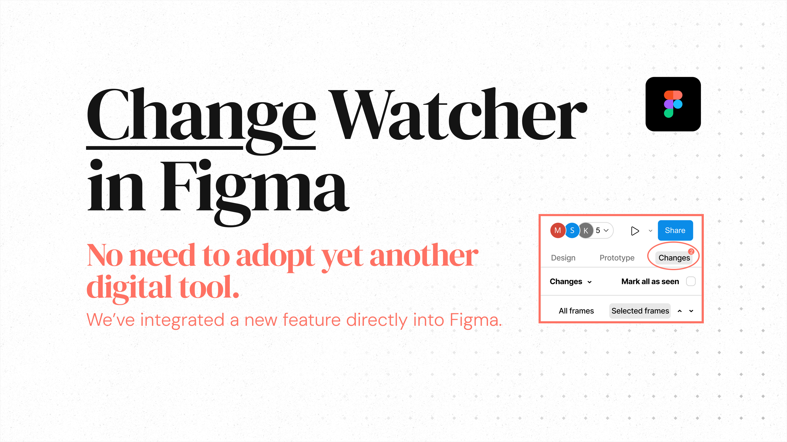
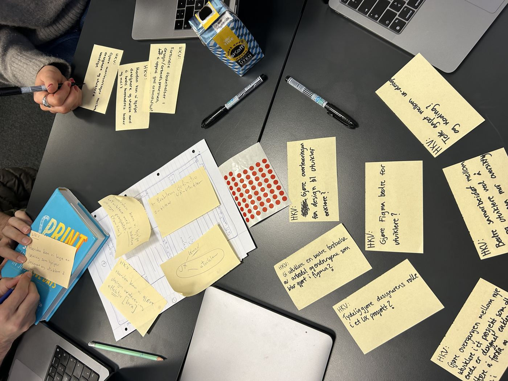
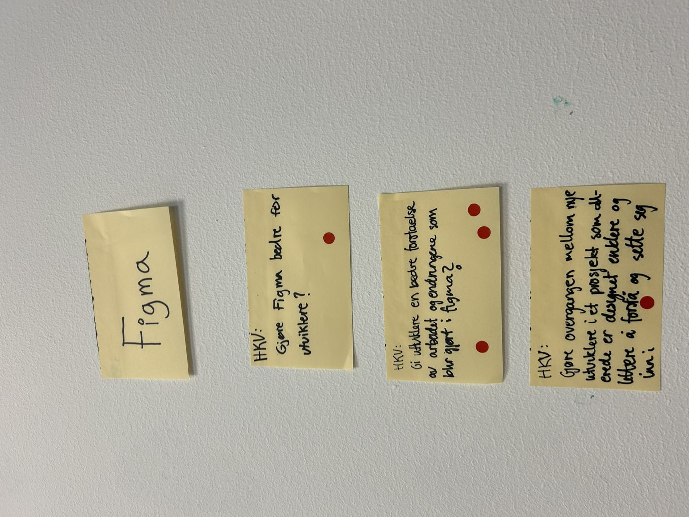
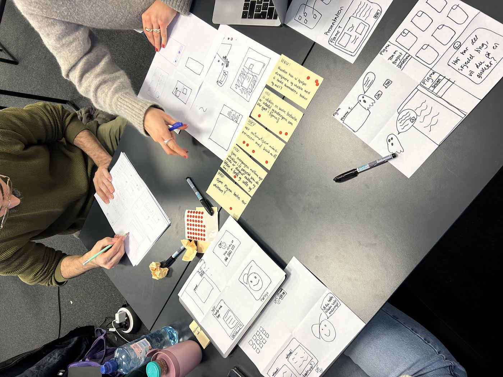
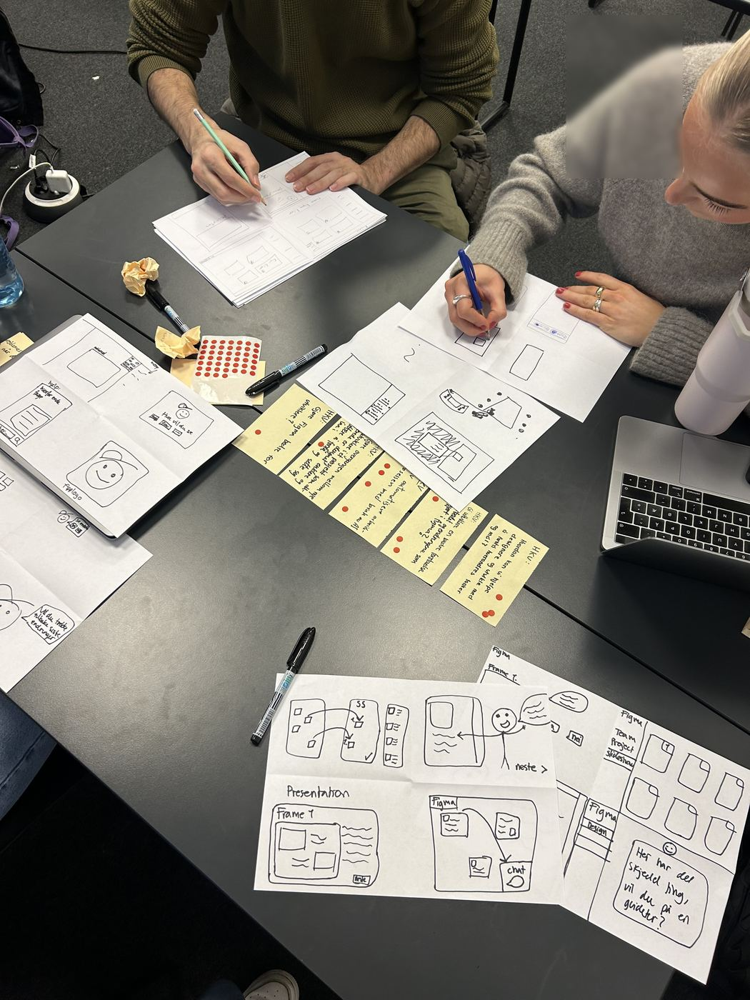
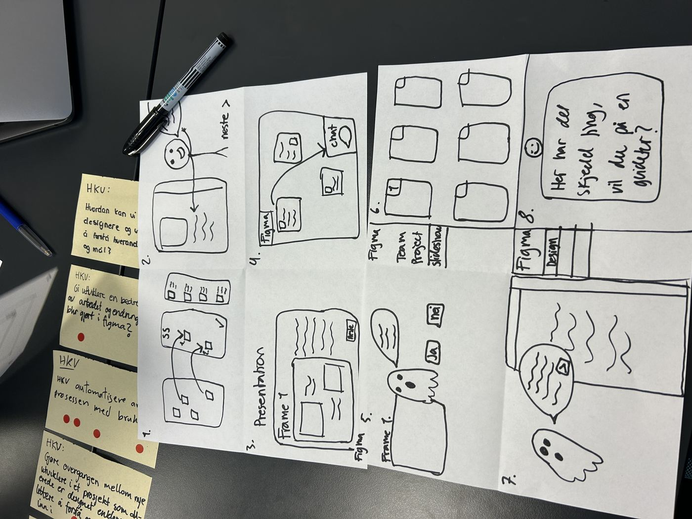
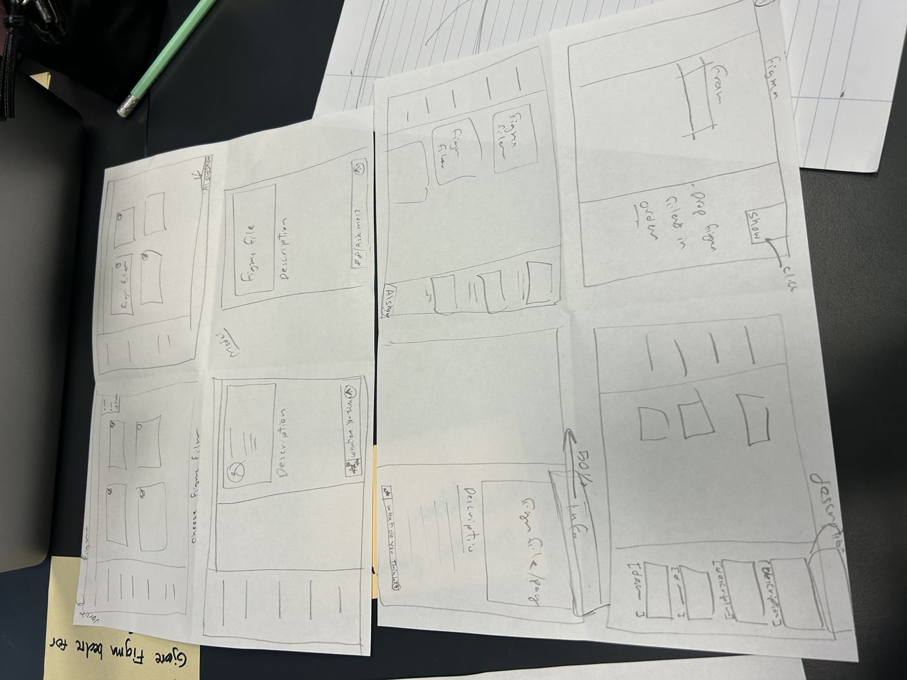

Keeping developers in sync when design changes after handoff.

We visited a Bergen consultancy and watched how designers and developers actually work together. The biggest friction point: developers get overwhelmed by huge Figma handoffs, and when a designer changes something afterward, no one notices until it breaks something downstream.
Field visits, interviews, and observation at a Bergen consultancy — watching how designers and developers actually hand off work. Then a design sprint: HKV brainstorming, dot-voting, sketching, and wireframes in Figma.
Internal handoffs went fine — the real pain was with external developers unfamiliar with Figma, who often ended up not knowing what changed.






Rather than build a separate app, we designed "Changes" as a feature living directly inside Figma — where developers already work. It tracks edits after handoff and uses an AI assistant to explain what changed, in plain language, without forcing anyone to leave their existing workflow.
A working Figma plugin concept, tested with real users: 80% completed tasks successfully, and 90% said it would be genuinely useful in cross-functional teams.